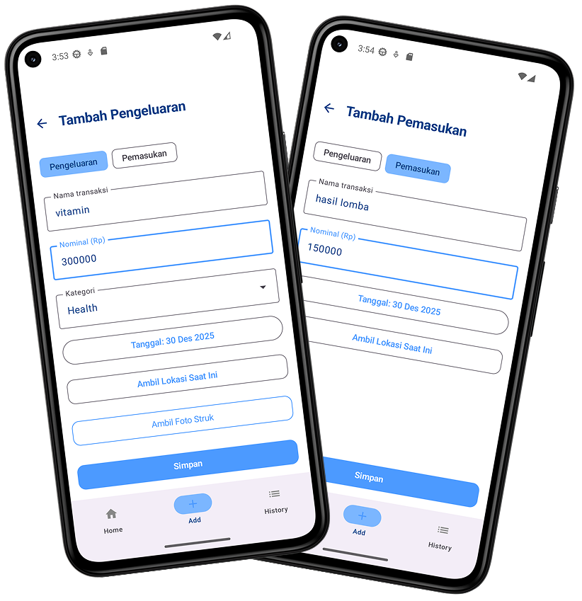
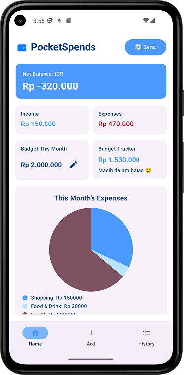
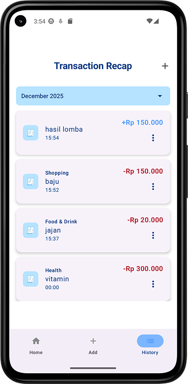

Programmer, UI designer
Android Studio, Kotlin
Oct 2025 - Nov 2025
PocketSpends is a mobile application developed as part of the Mobile Application Development course. The project aims to help users record and manage their daily financial activities, including income and expenses, in a simple and structured way. In this project, I focused on designing the user interface, defining application flows, and implementing the core application logic. The app emphasizes clarity, ease of use, and real-time data updates to help users better understand their financial habits and monthly spending patterns.
Allows users to add, edit, and delete income and expense transactions, including amount, category, date, and optional receipt photos.
Provides a clear overview of monthly income and expenses, supported by visual summaries and budget tracking. This feature helps users monitor spending patterns, set monthly limits, and manage their finances more effectively.
Displays a structured list of past transactions grouped by date, allowing users to review and manage their financial records easily.
TThe development process began by identifying everyday financial management problems faced by users, particularly in tracking income and expenses consistently. The project scope was aligned with relevant Sustainable Development Goals (SDGs), focusing on promoting financial awareness and responsible financial behavior through a digital solution.
Based on the identified problems, application requirements were defined to ensure the solution remained practical and easy to use. Key features were planned to support daily expense tracking, financial summaries, and budget management in accordance with the course objectives.
User interfaces and application flows were designed to provide clear navigation and efficient data input. Special attention was given to form design, screen transitions, and information hierarchy to support a smooth user experience on mobile devices.
Core application logic was implemented using Kotlin to manage transaction data, calculate financial summaries, and update application states. This stage focused on ensuring correct data processing and responsive interactions within the application.
The application was tested to ensure all features functioned correctly across different usage scenarios. Improvements were made to both the interface and logic to enhance usability, performance, and overall application stability.